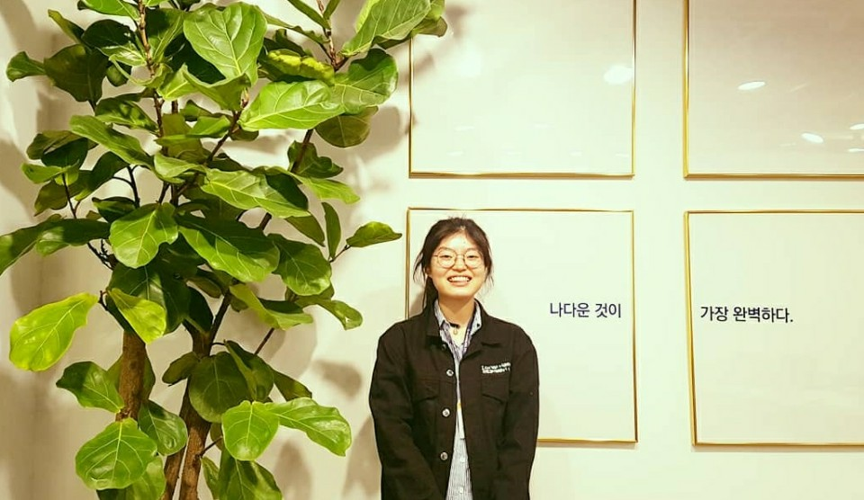
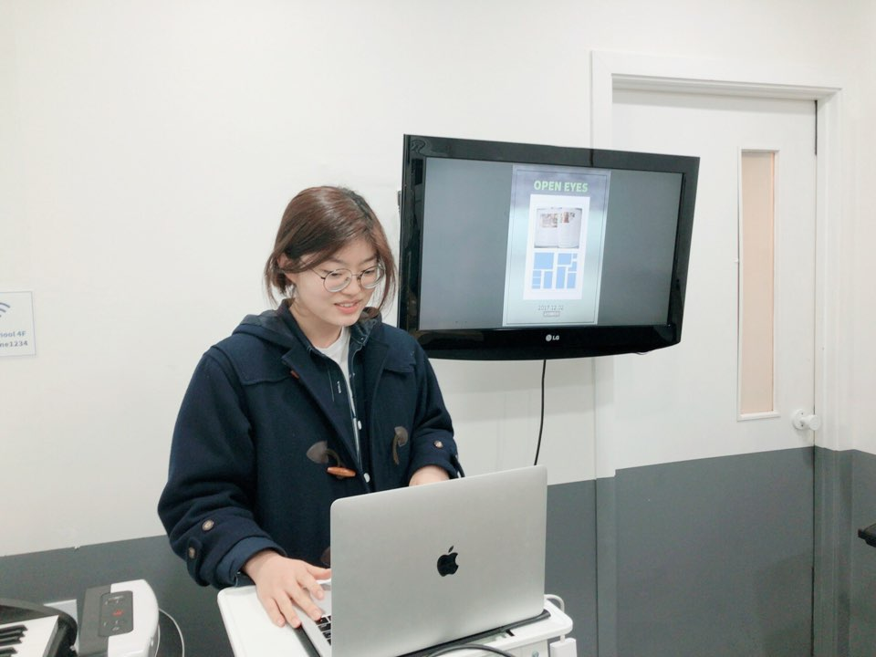
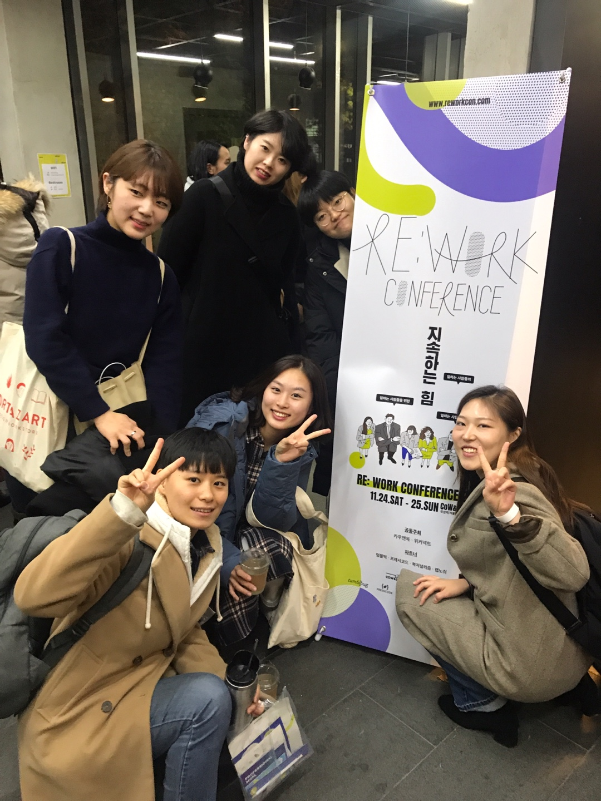
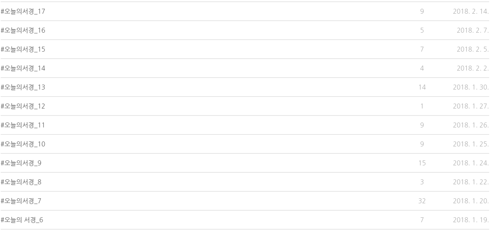

Hu-man Project/
Community Review/
Pick & Show/
Want click?
See
the
unseen
a kind of planner
휴학하는 인간
Hu-man
2017.1.1 - 2018.2.28
"전공이 뭐에요?"
교육학과요.
"무슨 교육학과요?"
그냥 교육학과요.
사범대 다녀요.
"그럼 나중에 선생님 되겠네요?"
‘학교’에서 무언가를 가르쳐야만 교육일까요?
‘선생님’은 학교에서만 가르쳐야 하나요?
저는 학교 밖의 교육이 궁금했습니다.
‘배워야 하는 지식＇이 아닌 ‘배울 수 있는 환경’을요.
"학생들이 배울 수 있는 환경은 어떻게 만들 수 있을까요?
이 질문에 대한 답을 얻기 위해
제가 막연히 꿈꾸었던 ‘새로운 교육'을 하는
학생들끼리 서로 묻고 이야기하는 수업
소통하는 법과 나를 아는 방법이라는 컨텐츠
학생들이 가장 즐거운 곳으로
6개월간 유학을 다녀왔습니다.
인큐 
J-life school 
외롭지 않은
기획자 학교 
좋일업방
-오늘의 서경 
뭘 배웠냐면
선생님들 중
사범대를 나오신 분은
단 한 분도 계시지 않았으며
'선생님'은 자신의 삶과 존재로
타인에게 선한 영향을 미치는 존재라는 것입니다.
이때 배운 것은
Hu-man project가 되어
자신에 대한 배움을 쉬지 않는 사람들을 위한
커뮤니티 겸 프로젝트로 기획되었습니다.
어떤 모습으로든
Hu-man project는 계속될 것입니다.


a kind of planner